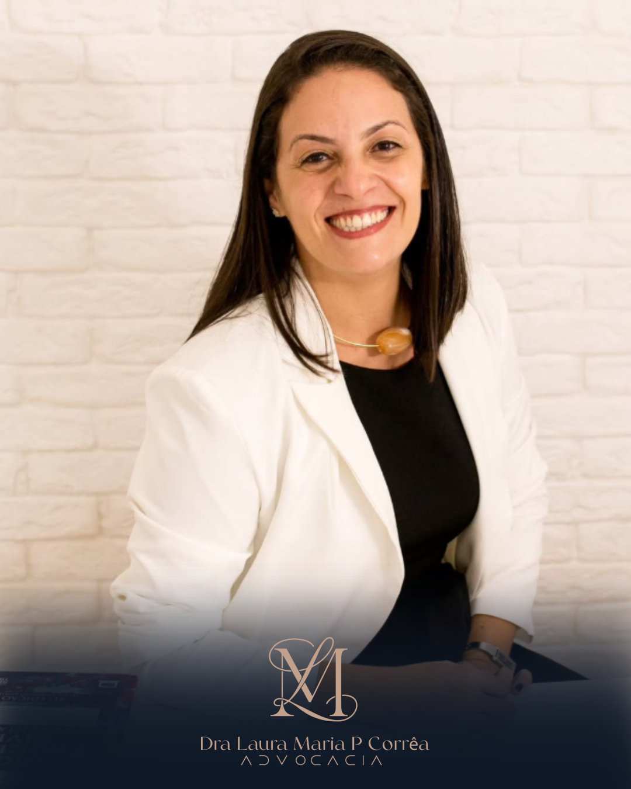

Demissão e valores não pagos
Análise da rescisão, dos pagamentos e dos documentos para identificar possíveis diferenças.
Quero analisar minha rescisão ↗DIREITO DO TRABALHO · SÃO PAULO
Foi demitido, não recebeu corretamente ou enfrenta problemas no trabalho? Entenda sua situação antes de decidir o próximo passo.
Atendimento online e presencial · OAB/SP 257.922

Online e presencial · OAB/SP 257.922
QUANDO BUSCAR ORIENTAÇÃO
Você não precisa conhecer todas as leis para dar o primeiro passo. Conte o que aconteceu e receba orientação sobre os caminhos possíveis.
Análise da rescisão, dos pagamentos e dos documentos para identificar possíveis diferenças.
Quero analisar minha rescisão ↗Avaliação da rotina de trabalho e das provas disponíveis para verificar a possibilidade de reconhecimento do vínculo.
Quero entender meu caso ↗Revisão dos registros de ponto, dos intervalos e dos pagamentos relacionados à jornada de trabalho.
Quero avaliar minha jornada ↗Escuta reservada e análise dos fatos e documentos sobre situações abusivas no ambiente profissional.
Quero conversar sobre isso ↗Orientação sobre o encerramento do contrato e as alternativas jurídicas aplicáveis à sua situação.
Quero conhecer as possibilidades ↗Análise de acidentes, adoecimento e exposição a riscos, considerando os documentos e as particularidades do caso.
Quero orientação jurídica ↗AINDA ESTÁ NA EMPRESA?
Se o problema continua acontecendo, uma análise individual ajuda a organizar os fatos, preservar documentos e avaliar o próximo passo com mais clareza.
QUEM VAI OUVIR VOCÊ
Uma conversa clara.
Uma análise individual.
Um próximo passo consciente.
Por trás de uma dúvida trabalhista, existe uma história que merece ser ouvida.
À frente da LMPC Sociedade Individual de Advocacia, a Dra. Laura Maria P. Corrêa oferece atendimento personalizado, com escuta, clareza nas orientações e respeito às particularidades de cada pessoa.
Título de especialista obtido em 2007.
Experiência nos setores de comércio, saúde, metalurgia, mecânica e prestação de serviços.
O atendimento começa pela compreensão do seu relato e dos documentos disponíveis. As possibilidades, os limites e as condições de contratação são apresentados para que você decida com informação.
Converse com a Dra. Laura ↗COMO FUNCIONA
Inicie a conversa pelo WhatsApp e explique, de forma breve, sua situação no trabalho.
A equipe orienta quais documentos podem ajudar na análise, conforme o seu caso.
Conheça os encaminhamentos possíveis e as condições para seguir com o atendimento jurídico.
DÚVIDAS FREQUENTES
Cada situação tem suas particularidades. A análise individual é o ponto de partida.
Você pode iniciar o contato com um relato do que aconteceu. A equipe indicará quais documentos são relevantes e o que pode ser reunido para analisar sua situação.
Sim. O escritório oferece atendimento online e presencial em São Paulo. Pelo WhatsApp, você pode combinar a modalidade e os próximos passos.
Se disponíveis, carteira de trabalho, contrato, holerites, documentos da rescisão, registros de ponto e mensagens relacionadas ao caso. Não é necessário enviar tudo no primeiro contato: aguarde a orientação da equipe.
As condições são apresentadas de acordo com a análise e o serviço necessário, antes da contratação. O contato inicial não representa contratação automática.
Não. A avaliação considera os fatos, as provas e as regras aplicáveis. Nenhum resultado ou prazo de conclusão pode ser garantido.
VAMOS CONVERSAR?
Fale com o escritório sobre sua situação trabalhista.
Conversar pelo WhatsApp(11) 93437-0907